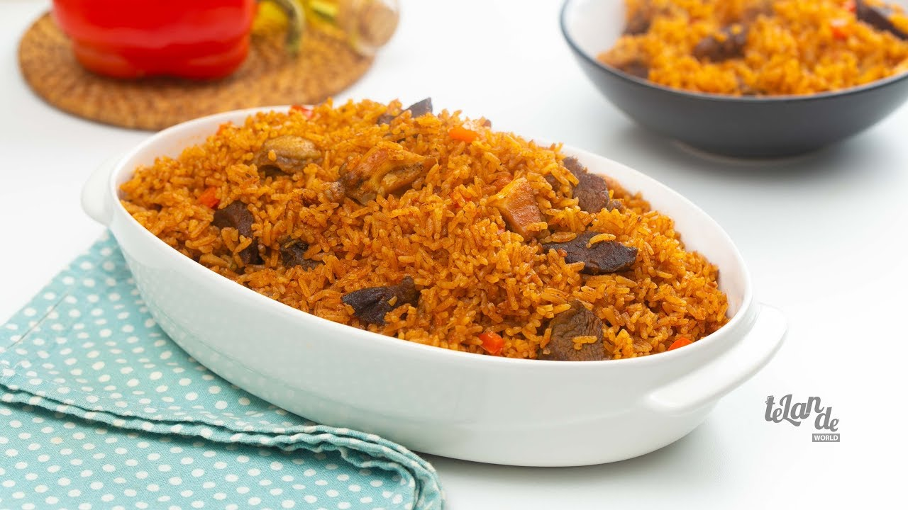

Jollof Rice Recipe

Jollof rice is an african dish known for its addictive tendencies and
delicious flavour, it combines sauce with white rice garnished with
healthy vegitables and sometimes a meat of choice
Ingredients
- White Rice
- Bell Peppers
- Tomatoes
- Curry
- Thyme
- Meat of your choice
- Corn and other Veggies
Steps
- Wash The Rice
- Parboil The Rice
- Prepare your sauce
- Mix and wait till rice becomes soft
- Garnish with Veggies